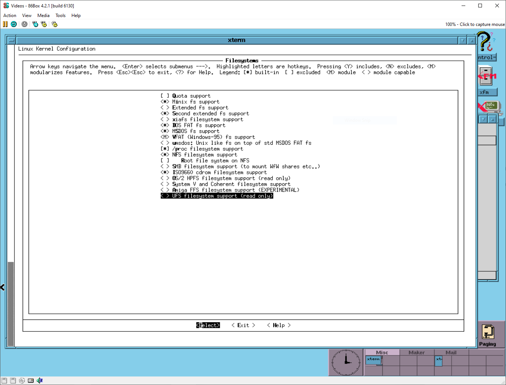
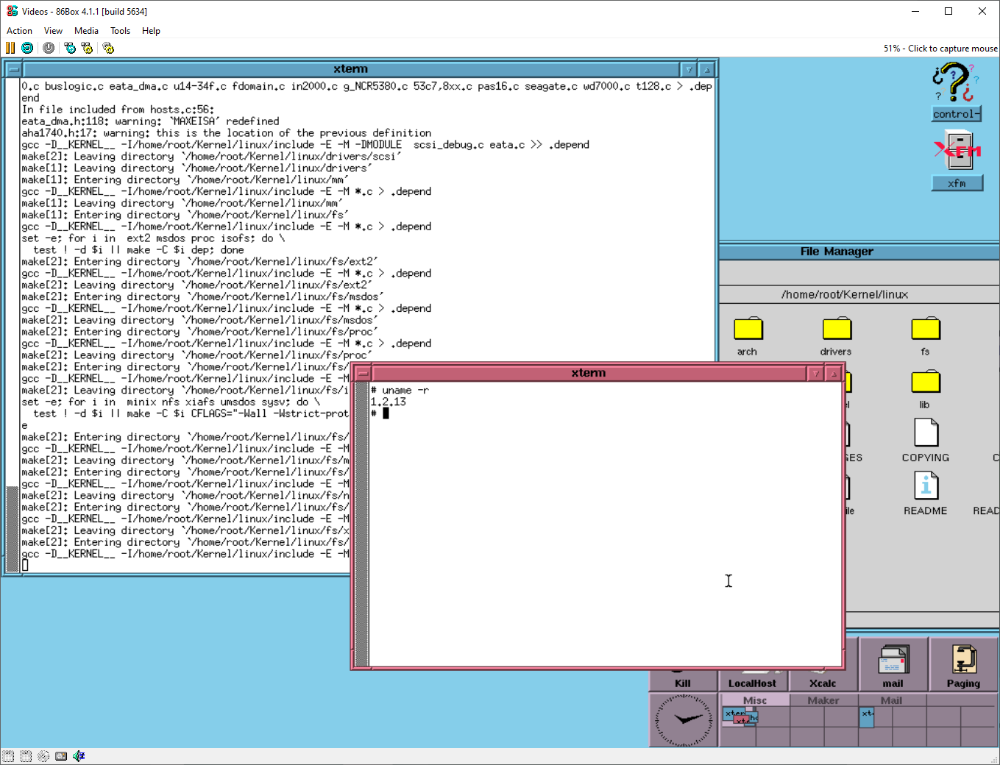
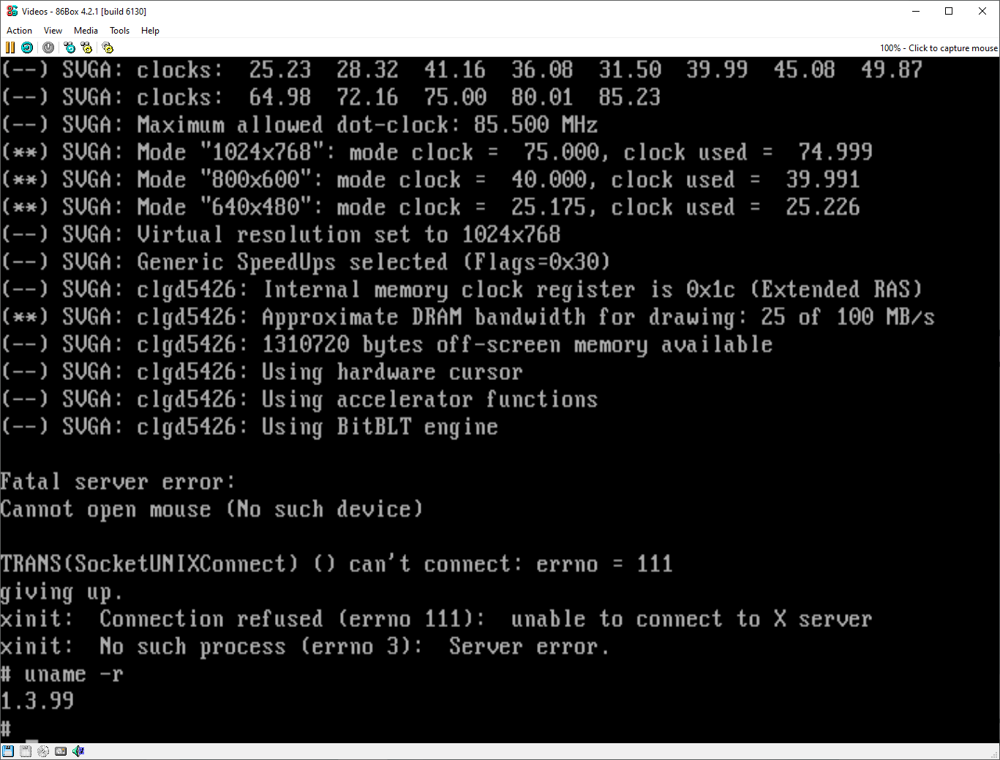
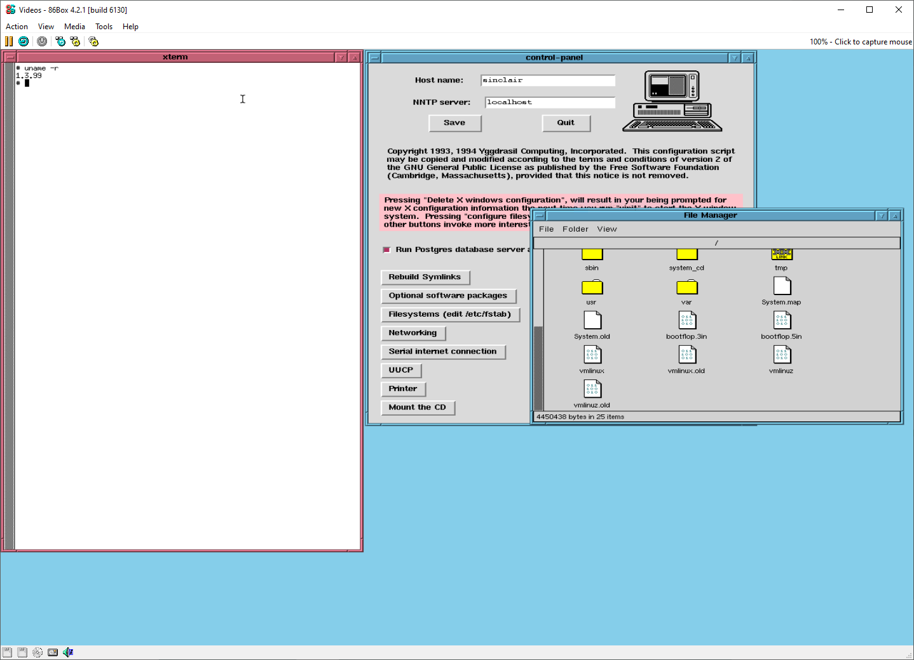

Yggdrasil Reloaded - Breathing New Life Into a Forgotten Linux Distribution: Part 1
It started with a simple thought: Could I upgrade the kernel version used in Yggdrasil Linux from Fall 1995 to a more newer version?
This project began with a kernel upgrade to version 1.3.99, hoping to unlock more compatibility and
functionality. What I didn't anticipate, however, was the cascade of challenges I would face—from dependency hell
to package management chaos.
Upgrading the Kernel
Yggdrasil originally came with a much older kernel, that being 1.2.13, but I opted for version 1.3.99.

Make config looks odd in the terminal when I could have just used make xconfig to get an actual GUI.

The above screenshot was during the process of upgrading from 1.2.13 to 1.3.99.
By default when you booted Yggdrasil from the hard disk after you installed it it would still for probe for hardware at certain IRQs, though after I upgraded the kernel to 1.3.99 this went away.
The downside to upgrading the kernel was my X configuration had broke for some reason and I have to use xf86config to fix it... sorta. I had to use a bus mouse when I would usually use a PS/2 one. This is annoying as sometimes it doesn't even detect my bus mouse at all and I am stuck with the CLI

This screenshot shows the problem with the mouse not being detected.

This screenshot was one of the few instances where I did get the X configuration to work but unlike the pewvous screenshot, the whole desktop didn't fix in 86box's screen.
Introducing RPM to Yggdrasil
Yggdrasil's package management was simple for its use, but the default tkinstall script used for installing software was too limiting. When you get into the GUI Yggdrasil has a control panel where you can do certain things, such as installing extra packages if you did not do a full install, but you could only select bundles of software from the Yggdrasil CD only. I could have modified the tkinstall script but it was not worth all the painful effort.
At first I planned on using whatever Slackware used, but decided to install RPM 2.3 instead to see if I could escape problems with the default install method in Yggdrasil. I ended up running into more problems than solutions such are RPM needing requirements, so I downloaded those and installed them only to get stuck with the RPM files not even installing anyway. Oh, and the failure of the RPMs installing somehow managed ti overwrite certain programs I needed for boot to have ".rpmorig" at the end of them.
The point of giving up
With the problems of RPM renaming files when I was trying to rename them back, I made a huge mistake and ended up renaming all the files the same as one when I tried a method of renaming them all by removing the extension... so that messed everything up and I figured it would be best to start from scratch which is what part 2 is about.